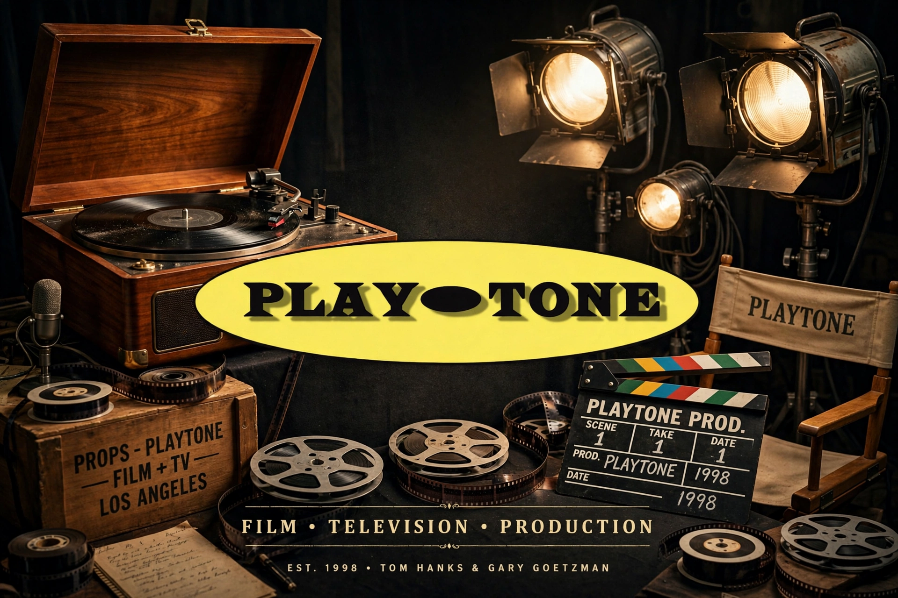

Playtone is an American film and television production company founded in 1998 by actor Tom Hanks and producer Gary Goetzman. The name is taken from the fictional record company in Hanks's film That Thing You Do! (1996).
| Playtone | |
|---|---|
 | |
| Founded | 1998 |
| Founders | Tom Hanks, Gary Goetzman |
| Headquarters | Santa Monica, California, US |
| Industry | Film, television |
Films include Cast Away (co-production), My Big Fat Greek Wedding, The Polar Express, Mamma Mia!, Greyhound and A Man Called Otto. Television includes HBO miniseries Band of Brothers, John Adams, The Pacific, Olive Kitteridge and Apple TV+ series Masters of the Air.